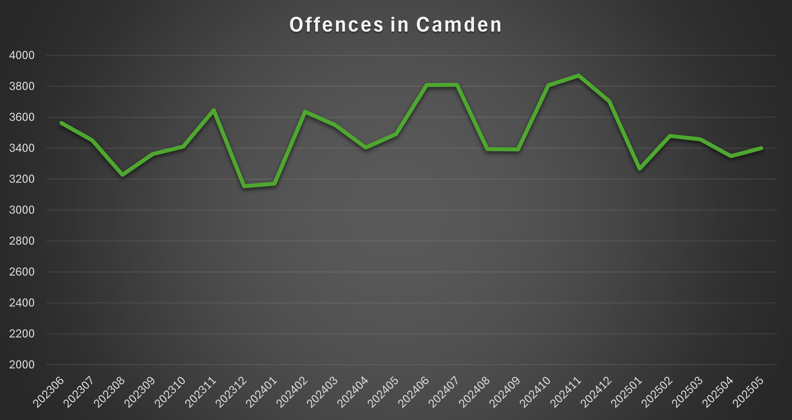

Crime Types and Rates
- Theft from the Person – Average: ~700/month; Peak: 980 (March 2024).
- Other Theft – Average: ~600/month; Peak: 891 (November 2023).
- Violence Without Injury – Average: ~420/month; Peak: 491 (June 2024).
- Shoplifting – Average: ~290/month; Peak: 407 (November 2024).
- Criminal Damage – Average: ~150/month; Peak: 172 (May 2024).
Key Trends:
- Theft and violence are concentrated around Camden Market and nightlife hubs.
- Shoplifting rises during weekends and festivals.
Safety Advice
- ✅ Be cautious in Camden Market – keep bags closed and phones secured in crowded stalls.
- üåô Avoid walking alone late at night near Camden Town tube station, where altercations occur.
- üöñ Use licensed taxis or ride-shares after nights out to avoid opportunistic theft.
- üö´ Do not accept substances from strangers or engage with street dealers, because drug-related arrests are frequent.
- üîí Always lock doors and windows in student accommodations, especially on the ground floor.
Crime Statistics Chart

Offences in Camden